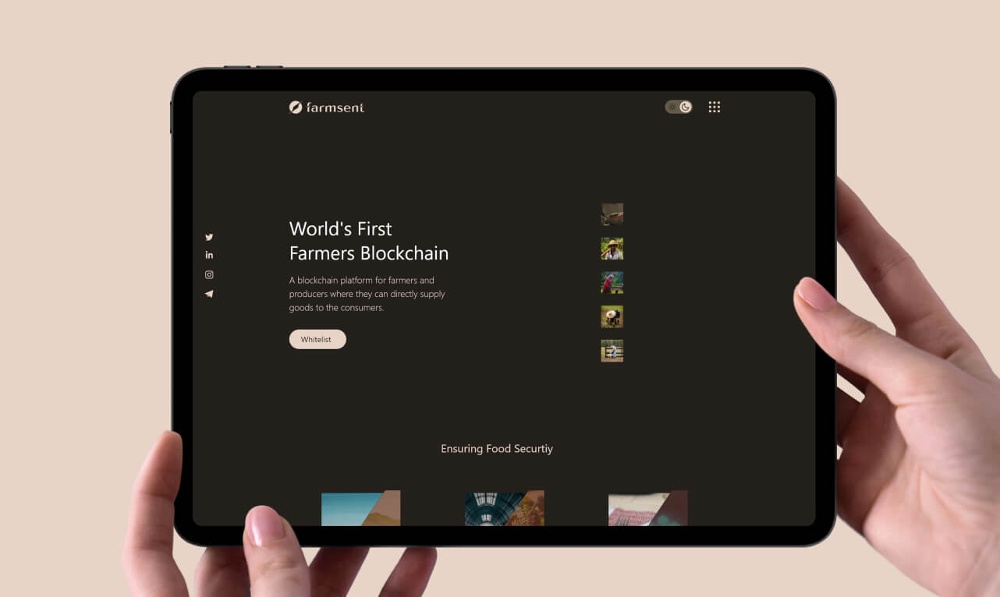
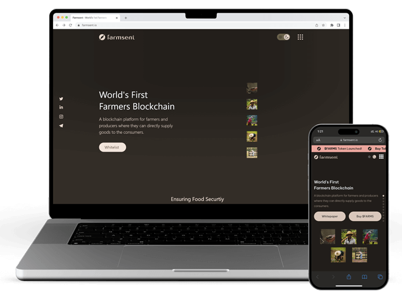
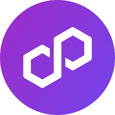

Farmsent
A blockchain platform for farmers
Producers where they can directly supply goods to the consumers

Producers where they can directly supply goods to the consumers
Farmsent - A blockchain platform for farmers and producers where they can directly supply goods to the consumers
A decentralized network of farmers that facilitates food trade & food security globally
Food & Beverages
Farmsent is a blockchain platform that empowers farmers and buyers by enabling a direct supply of goods to consumers. This decentralized marketplace offers farmers access to a wide network of distributors, ensuring transparent tracking and verification of product origin and quality. Both buyers and farmers benefit from enhanced trust and transparency within the blockchain in Agriculture.
At the core of Farmsent's mission is simplifying the farming process for farmers. By handling supply chain logistics, quality assurance, and secure payment processing, the platform allows farmers to focus solely on their expertise: Farming. Farmsent's user-friendly design ensures accessibility for farmers and businesses of all technological backgrounds. By connecting farmers directly with buyers, the platform eliminates unnecessary middlemen, ensuring fair prices for crops and fostering stronger relationships between farmers and buyers.
In this blockchain food traceability case study, you can analyze how the current agriculture sector enters a new era of efficiency and empowerment, providing a sustainable and transparent marketplace that benefits all stakeholders in the farming community.
The main objectives of Farmsent are met without the involvement of any middlemen which allows the farmers or the producers to set the prices for the commodity to make a higher profit; therefore, the buyer can get better prices that haven’t been influenced by the middlemen or distributors.
Its decentralized trade model makes trade more transparent & profitable for all parties.
A fair future contract, or FFC, is a soft contract that allows one to sell at the current market price rather than the price that was set months ago.
At Farmsent, the mission is to be committed to fostering a community-driven approach, bridging the gap between farmers, buyers, and supply chains, thereby ensuring fair and transparent agricultural practices. By embracing cutting-edge research and continuous improvement, Farmsent envisions becoming a key player in the global agritech landscape, shaping the future of farming for the betterment of society and the environment.
All that matters in Farmsent is the harmonious integration of farmers and buyers into a dynamic ecosystem. By nurturing this platform which benefits both farmers and buyers, Farmsent aims to revolutionize this agricultural industry and blockchain agriculture traceability for the betterment of all partners involved.
Climate and Weather Uncertainty:
Farmers often face unpredictable weather patterns, extreme conditions like droughts or floods, and changing climate conditions, which can significantly impact crop yields and productivity.
Market Price Fluctuations:
Farmers may struggle with price volatility for their produce, leading to uncertain income and potential financial risks.
High Production Costs:
The cost of inputs, such as seeds, fertilizers, and pesticides, can be substantial, putting a strain on the financial viability of farming operations.
Land Degradation and Soil Health:
Soil erosion, depletion of nutrients, and land degradation are ongoing challenges that can affect crop quality and yield.
Pests and Diseases:
Farmers need to combat pests, diseases, and invasive species that can damage crops and threaten agricultural output.
Government Policies and Regulations:
Agricultural practices can be influenced by government policies, regulations, and subsidies, which may impact the profitability of farming ventures.
Market Access and Distribution Challenges:
Farmers may need help accessing markets and securing fair prices for their products. Transportation and logistics can also present hurdles to getting produce to market efficiently.
Changing Consumer Preferences:
Consumer preferences and demands for specific products can shift rapidly, requiring farmers to adapt to new market trends.
Delivery and Timing:
Trust is crucial in buyer-supplier relationships, but it doesn't guarantee timely product delivery. Various factors like delays, logistics issues, or unforeseen circumstances can disrupt the supply chain.
Price-related Issues:
Price volatility and overpricing can strain buyer-supplier relationships, leading to conflicts and negotiation challenges.
Quality Concerns:
Inconsistent product quality can erode trust between buyers and suppliers, and blockchain for organic food traceability impacts the overall business partnership.
Payment Delays:
Late or delayed payments can cause financial strain on suppliers and may harm the business relationship.
Transparency and Trustworthiness:
Lack of transparency in business dealings can lead to misunderstandings and decrease trust between buyers and suppliers.
Farmsent aims to address issues facing farmers such as crop insurance, access to fertilizers, Agritech, and volunteerism during harvest seasons. Farmsent Foundation will contribute to these causes to ensure the farmers’ well-being.
Farmsent empowers farmers with seed ownership, enabling direct sales to consumers. By cutting out middlemen, farmers increase profits and deliver better produce, while consumers enjoy fresher ingredients directly from the source.
The $FARMS Token is intended to increase trust among all parties involved in every part of the trading process. On the Farmsent platform, these tokens are the primary instrument.
Improve farmers' access to capital by implementing a more efficient trading mechanism.
Eliminate trade bottlenecks caused by centralized systems and practices.
Food insecurity affects one-third of the world's population, but blockchain food traceability makes it more transparent, inclusive, and liquid.
Sitemap
IA
Journey map
Explore the working module of Farmsent, here is a detailed outlook of the platform in our blockchain food traceability case study.
Admins have the authority to manage user accounts on Farmsent. This includes tasks such as user registration approvals, verifying user identities (if required) & handling account-related issues.
Admins are responsible for overseeing the products listed on the Farmsent marketplace. They can add new products, edit existing ones & ensure accurate inventory tracking to maintain up-to-date product availability.
When buyers create QROs for products listed by farmers, admins handle the QRO management process. This may involve reviewing & validating QROs before sending them to the farmers.
Once a farmer accepts a QRO and a buyer confirms the order, admins oversee the order processing stage. They ensure secure payment processing & monitor the progress of orders, stepping in to resolve any issues that may arise.
Admins are involved in managing the shipment process. They oversee the creation of shipments, track their progress, and ensure timely deliveries to buyers.
Admins may need to provide payment-related information to buyers. This can include the buyer's name, payment ID or transaction ID, and an option to upload payment receipts for verification purposes.
Throughout the order and shipment process, admins can send notifications to relevant parties (buyers, farmers, etc.) to keep them informed about the status of their transactions and shipments.
Farmsent likely involves scheduled deliveries for certain products. Admins manage these schedules, ensuring shipments are prepared and delivered on time.
Admins are responsible for verifying the quality and authenticity of products listed on the platform.
As the shipment progresses and reaches its destination, the admin can update the shipment status to keep both the buyer and the farmer informed.
Buyers need to register on the Farmsent platform by providing their relevant details & creating an account. This step ensures that buyers have authorized access to the platform.
Once registered, buyers can browse through the various agricultural products available on the Farmsent marketplace. These products are listed by farmers who are part of the platform.
When a buyer finds a product of interest, they can create a Quotation Request Order (QRO) for that product. The QRO is a request made by the buyer to the farmer, expressing their interest in purchasing the product at a specific quantity and price.
The buyer's QRO is then sent to the relevant farmer(s) who have listed the product on the Farmsent platform. The farmer receives the QRO & can review the details.
The farmer evaluates the QRO and decides whether to accept, reject, or negotiate the terms. If the farmer accepts the QRO, the buyer is notified, and the order proceeds to the next stage.
Upon the farmer's acceptance, the buyer confirms the order and makes the payment through the platform. Farmsent likely supports secure payment methods, such as cryptocurrencies or traditional payment options.
With the payment received, the order is now in the processing phase. The Farmsent's admin can intervene if necessary to ensure a smooth transaction.
The farmer processes the order, prepares the product for shipment, and initiates the delivery to the buyer's specified location.
Throughout the shipment process, Farmsent provides tracking details to the buyer, allowing them to monitor the status and location of their order.
Farmers need to register on the Farmsent platform by providing relevant information and creating an account. This registration process ensures that only authorized farmers can participate in the marketplace. marketplace.
Farmers can list their agricultural products on the Farmsent marketplace once registered. They provide details such as product type, quantity, quality, and pricing.
When a buyer is interested in a farmer's product, they create a Quotation Request Order (QRO) specifying the desired quantity and price. Farmers receive these QROs and can review the details.
Farmers assess the QROs they receive and decide whether to accept, reject, or negotiate the terms with the buyer. This process allows farmers to make informed decisions based on market demands and their production capacity.
If the farmer agrees to the terms of the QRO, they accept it, and the order is confirmed.
With the order confirmed, the farmer processes the order and prepares the products for shipment. They initiate the delivery to the buyer's specified location.
Throughout the shipment process, Farmsent provides shipment tracking details to both the farmer and the buyer.
Farmsent's decentralized marketplace enables direct communication between farmers and buyers, facilitating clearer communication and building stronger relationships.
Farmsent likely uses blockchain technology to record and verify the origin and quality of the agricultural products listed by farmers. This transparency builds trust with buyers and enhances the credibility of the farmer's offerings.
The $FARMS Token is intended to increase trust among all participants in all phases of the transaction process. On the Farmsent platform, these tokens are the primary instrument. The maximum supply is 10,000,000,000 $FARMS.
Farmsent allotted 10% of the overall supply to private investors, 5% to advisers, and 15% to the team, with a token supply of 10,000,000,000. For these investors, the vesting period follows a well-structured period meant to ensure a fair distribution of tokens. Here are the main aspects:
The vesting period begins with a 6-month cliff for private investors and a 12-month cliff for teams. The assigned tokens stay locked throughout this period, ensuring stability and security.
Following the cliff, the vesting period begins, lasting many months. The tokens will be distributed gradually, ensuring a consistent and controlled distribution.
The linear vesting process occurs at a 10% per month rate, allowing private investors, team members, and advisers to receive their tokens in stages. This methodical strategy encourages price stability and long-term commitment.
Investors can view the schedule and token release by using their assigned wallet. They can also claim tokens beyond the cliff period by utilizing the same Dapp.

Angular

Node JS
MongoDB
Web
Mobile

Polygon
PolyTrade
Read what our valued clients have
to say about us
Sparkout initiated and successfully introduced Parkk's Android and iOS app, building it entirely from the ground up. Beginning with the initial phase of UX/UX app screen design, the project progressed through development over a one-year timeline. The delivered solution was of high quality, making it well-suited to present it to investors and ensuring stability for a successful live market launch.
Jason
In collaboration with Sparkout, we executed a comprehensive delivery solution tailored and localized for Argentina within approximately five months. Throughout the implementation process, they effectively addressed and resolved all technical issues that emerged, ensuring a smooth and successful deployment.
Daniel G. Camps
I highly commend the Sparkout Tech Solutions team for their patience, dedication, and professionalism. Choosing your company to develop our Food Delivery product was a wise decision.
Senthil Kumar
The Communication was friendly and straightforward, the service was prompt, and the team demonstrated high skills and reliability.
Kestas
Sparkout initiated and successfully introduced Parkk's Android and iOS app, building it entirely from the ground up. Beginning with the initial phase of UX/UX app screen design, the project progressed through development over a one-year timeline. The delivered solution was of high quality, making it well-suited to present it to investors and ensuring stability for a successful live market launch.
Jason
In collaboration with Sparkout, we executed a comprehensive delivery solution tailored and localized for Argentina within approximately five months. Throughout the implementation process, they effectively addressed and resolved all technical issues that emerged, ensuring a smooth and successful deployment.
Daniel G. Camps
I highly commend the Sparkout Tech Solutions team for their patience, dedication, and professionalism. Choosing your company to develop our Food Delivery product was a wise decision.
Senthil Kumar
The Communication was friendly and straightforward, the service was prompt, and the team demonstrated high skills and reliability.
Kestas
So far, in this blockchain food traceability case study, we have explored the technical aspects of Farmsent. Now, we will see what the results are.
Farmsent is committed to revolutionizing agriculture, increasing transparency, and empowering farmers and consumers. Farmsent is prepared to generate good change and uncover new opportunities in blockchain in the agriculture and trading environment through innovative technologies and a strong community.
It is establishing the basis for a secure and sustainable food supply chain, enabling millions of farmers to thrive and ensuring a better future for future generations.